The slide of the lecture is on the left, the same figure or table on the right, computed in the browser from the same data. The ▶ button moves the parameter step by step; the “Worked example” boxes redo the calculation with the numbers of the chapter.
Autoregressive models · Moving-average models · ARMA(p,q) models · Estimation · Model selection and diagnostics · Forecasting with ARMA models · Case study: Romanian GDP growth · More real series
Autoregressive models
Worked example: an AR(1)
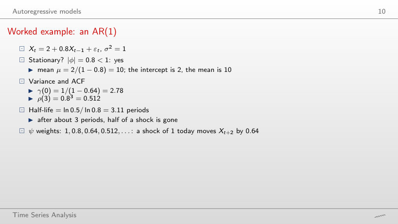
Worked example
Answer
No: μ = c/(1 − φ) = 2/0.2 = 10. The variance is γ(0) = 1/(1 − 0.64) = 2.78, ρ(3) = 0.512, and the half-life is 3.11 periods. With the same c and φ = 0.9, the mean rises to 20, γ(0) to 5.26 and the half-life to 6.58 periods.
AR(1) for three values of φ
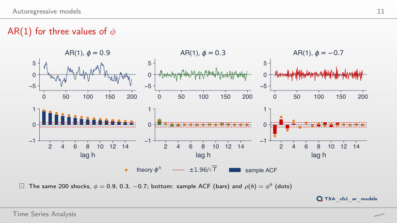
Answer
Both rise: ρ̂(1) goes from 0.10 to 0.95, and the sample variance from 1.04 to 14.5. The theoretical variance, 1/(1 − φ²), rises faster: 5.26 at φ = 0.9 and 50.3 at φ = 0.99. At φ = 0.9 the sample gives 4.98, below the theoretical value: a short path of a persistent process does not cover all its variation. With φ = −0.7 the sign of the autocorrelations alternates: ρ̂(1) = −0.58, ρ̂(2) = 0.34; at the end of the sweep, with φ = −0.77, ρ̂(1) = −0.66 and ρ̂(2) = 0.44.
The AR(p) model and its characteristic polynomial
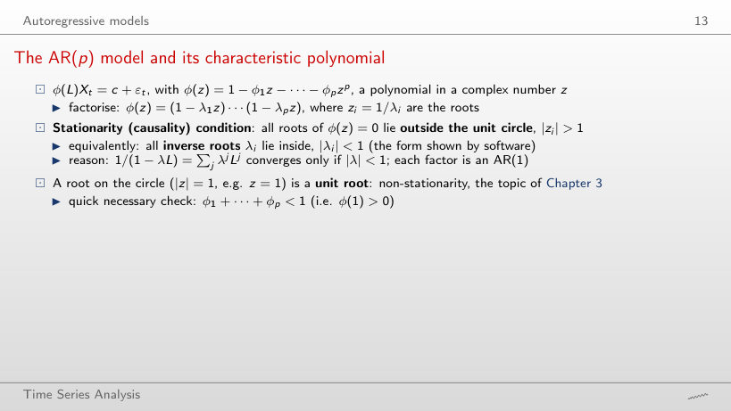
Worked example
Answer
Yes. The discriminant φ₁² + 4φ₂ = −1.4 is negative, the roots are complex, 0.833 ± 0.986i, with modulus 1.291 > 1 (the inverse roots have modulus 0.775). The triangle conditions hold: 0.4 < 1, −1.6 < 1, 0.6 < 1. Conversely, in example C both coefficients are below 1, yet the root 0.936 lies inside the unit circle.
Three AR(2) processes and the sunspots
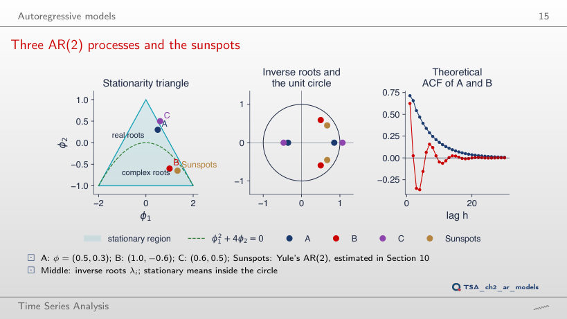
Answer
No. φ₁ + φ₂ = 1.1 > 1, so the point lies outside the triangle. The roots of 1 − 0.6z − 0.5z² are −2.14 and 0.936; the second lies inside the unit circle (its inverse root has modulus 1.068). Stationarity is read from the roots, not from the coefficients one at a time. B has complex roots, 0.833 ± 0.986i, with modulus 1.291: its ACF is a wave with a period of 7.2 lags, damped by 0.775 per lag.
Moving-average models
MA(1): θ = 0.8 and θ = -0.8
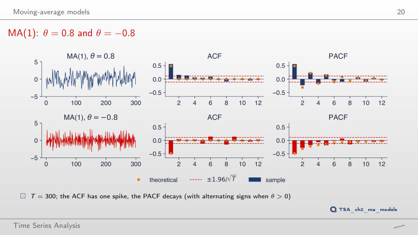
Answer
No. ρ(1) = θ/(1 + θ²) reaches its maximum of 0.5 at θ = 1 and then falls: at θ = 2 it is 0.4, the same as at θ = 0.5. At θ = ±0.8 the theoretical values are ±0.488, and the sample values, with T = 300, are 0.56 and −0.51. The ACF has a single non-zero value, while the PACF decays: φ̂₂₂ = −0.23 for θ = 0.8.
The largest autocorrelation of an MA(1)
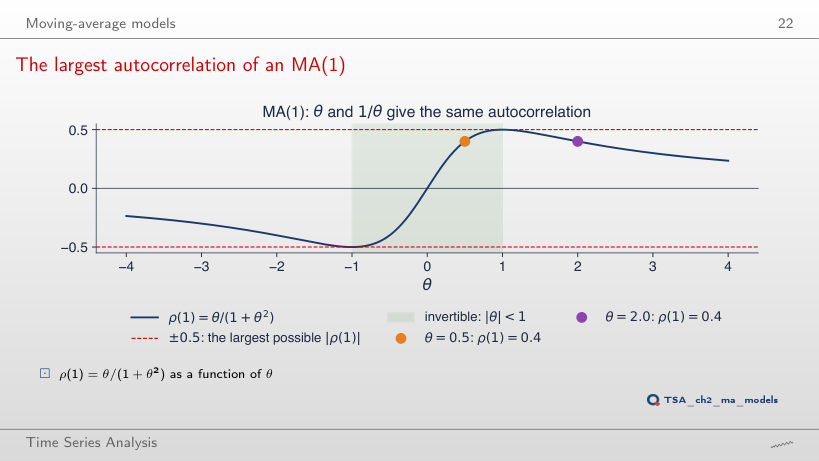
Answer
θ = 2 = 1/0.5. The two models have the same ACF (with σ² multiplied by θ²), so the data cannot tell them apart: an identification problem. The invertibility convention, |θ| < 1, keeps θ = 0.5.
Worked example: θ = 2 or θ = 0.5?
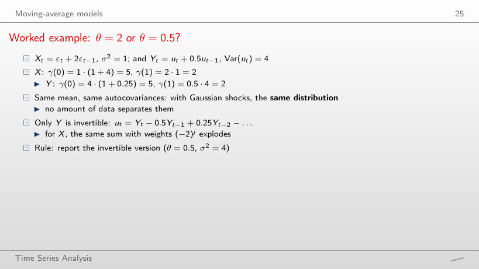
Worked example
Answer
For |θ| < 1. At θ = 2 the weights (−θ)j are 1, −2, 4, −8, … and reach 256 at j = 8: the shocks cannot be recovered from the past of the series. The twin representation, θ = 0.5 with σ² = 4, has the weights 1, −0.5, 0.25, … and the same γ(0) = 5, γ(1) = 2.
ARMA(p,q) models
The ψ weights and the impulse response
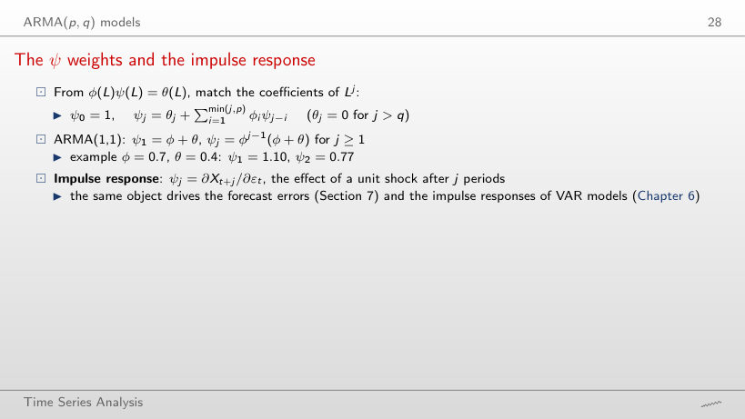
Worked example
Answer
Five, ψ₀…ψ₄: the cumulative sum of squares reaches 3.236, that is 95.9%; with ψ₀…ψ₃ it reaches 91.7%. ψ₁² = 1.21 alone accounts for 35.9%, more than the current shock (ψ₀² = 1, 29.7%), because ψ₁ = φ + θ = 1.10 > 1.
Impulse responses of four models
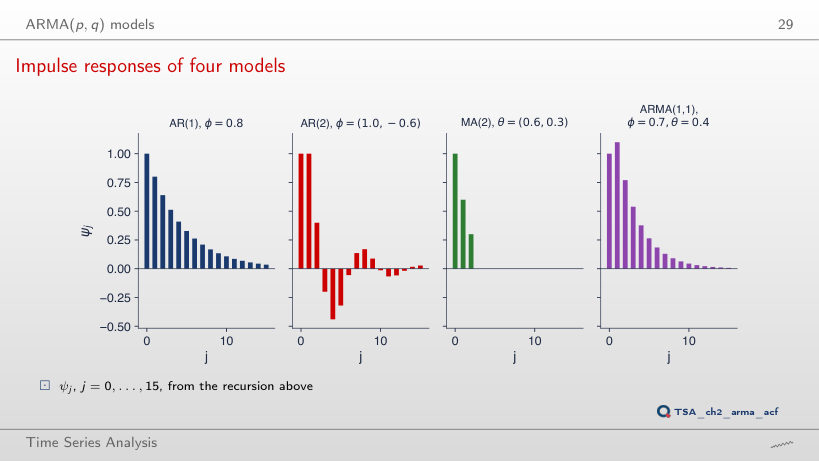
Answer
ψ₁ = φ + θ = 0.7 + 0.4 = 1.1: yesterday’s shock enters once through the MA term and once through the AR part. From j = 2 on, ψⱼ = φψⱼ₋₁: 0.77, 0.54, 0.38. The sum Σψⱼ² = 3.37 is the variance of the process in units of σ². For the MA(2) the response is exactly zero after two periods, and for the AR(2) with complex roots it changes sign: ψ₃ = −0.20, ψ₄ = −0.44. The ▶ button gives the first coefficient of the four models (θ₁ for the MA(2)) the same value, from 0 to 0.95 and back to 0.7: the AR responses last longer, the MA(2) response stays zero after j = 2.
Moments of the ARMA(1,1)
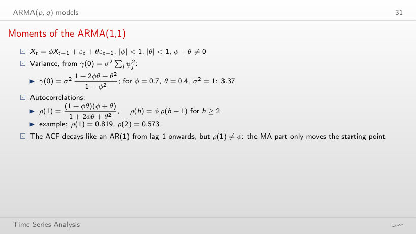
Worked example
Answer
Above: ρ(1) = 0.819 > 0.7. The difference ρ(1) − φ = θ(1 − φ²)/(1 + 2φθ + θ²) has the sign of θ, so with θ = −0.4 the ACF starts below φ: ρ(1) = 0.360, ρ(2) = 0.252, and γ(0) falls from 3.37 to 1.18. In both cases the ratio ρ(h)/φh is constant (1.169 and 0.514): after lag 1 the ACF decays like that of an AR(1).
Identification: the ACF–PACF table
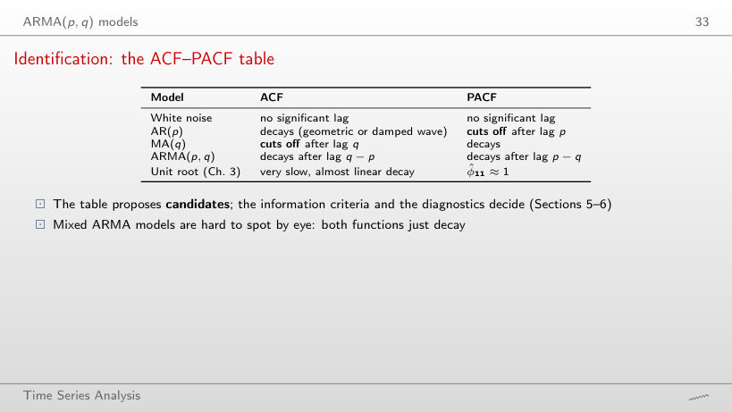
Answer
Yes for the PACF: the band widens to ±0.196 and the PACF still leaves it only at lags 1 and 2. The ACF leaves it at lags 1, 3, 4 and 5: the damped-wave decay is visible in the short sample too. For the MA(2) with T = 500, the ACF leaves the band at lags 1 and 2 and the PACF at lags 1–4: the table is read the other way round.
Theoretical and sample ACF and PACF
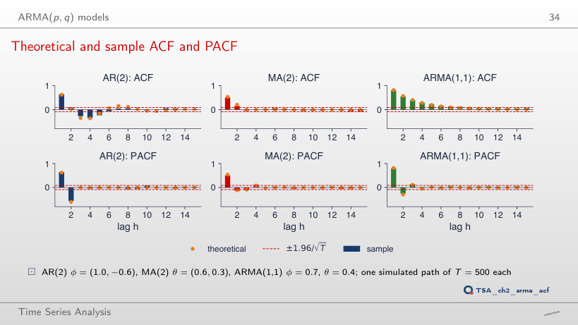
Answer
The band narrows from ±0.28 to ±0.09, and the sample values move towards the theoretical ones. At T = 500, for the AR(2), φ̂₂₂ = −0.56 against φ₂₂ = −0.60; for the MA(2), ρ̂(1) = 0.51 and ρ̂(2) = 0.15 against 0.54 and 0.21. With short samples, the correlograms of different models can be confused.
Estimation
Worked example: Yule–Walker on Romanian GDP growth
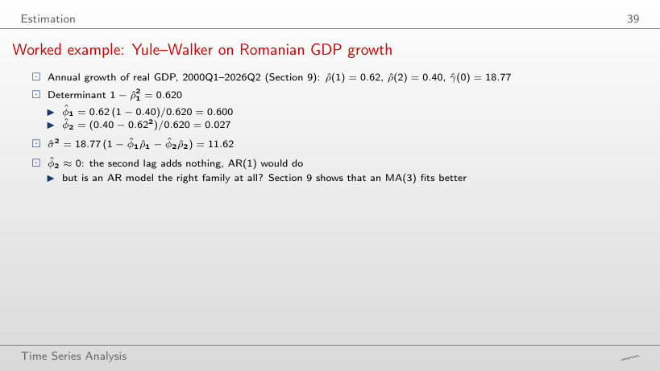
Worked example
Answer
0.620, computed with the unrounded ρ̂₁ = 0.6167; 0.616 comes from rounding ρ̂₁ to 0.62. With the unrounded values, φ̂₁ = 0.600, φ̂₂ = 0.027 and σ̂² = 11.74, as on the slide; with the rounded 0.62 and 0.40 one would get φ̂₁ = 0.604 and φ̂₂ = 0.025. On the sample that stops in 2019Q4, φ̂₂ = 0.102.
Maximum likelihood
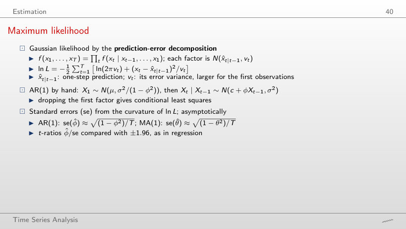
Worked example
Answer
The curvature: 0.076, against 0.075 from the asymptotic formula. 0.085 is the OPG (outer product of gradients) standard error, the statsmodels default. The conclusion does not change: φ̂ = 0.630, the t-ratio is 8.3 with the curvature, and the 95% interval is [0.481; 0.779].
Sampling distributions of the estimators
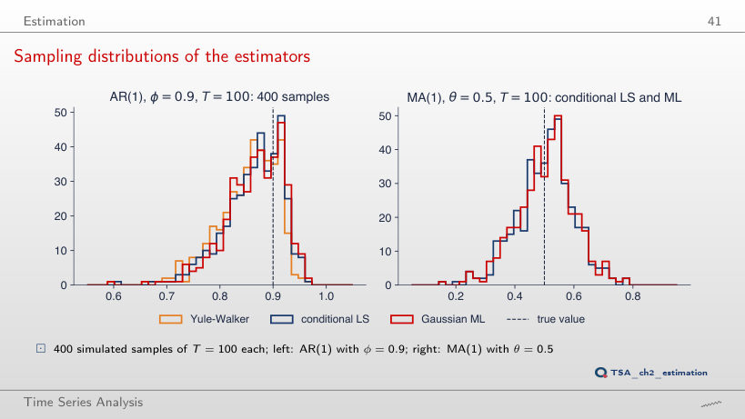
Answer
No. The means of the 400 estimates are 0.853 (Yule–Walker), 0.864 (conditional least squares) and 0.866 (MLE), all below 0.9; the approximation −(1 + 3φ)/T gives −0.037. The standard deviations, 0.054–0.056, exceed the asymptotic value 0.044. In the browser simulation with T = 400, the means rise to 0.889–0.891. For the MA(1) with θ = 0.5, the means are 0.504 and 0.506.
Model selection and diagnostics
Information criteria
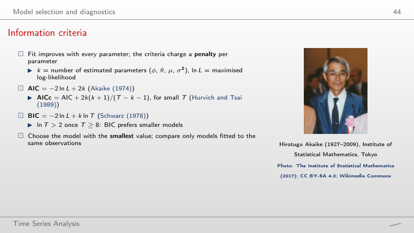
Worked example
Answer
The extra parameter costs 2 in AIC and ln 106 = 4.66 in BIC, while −2 ln L falls by only 3.07. AIC therefore falls by 1.07 (548.97 against 550.04), and BIC rises by 1.59 (564.95 against 563.36). AICc, with the small-T correction, gives 549.82 and 550.64.
How often AIC and BIC find the true order
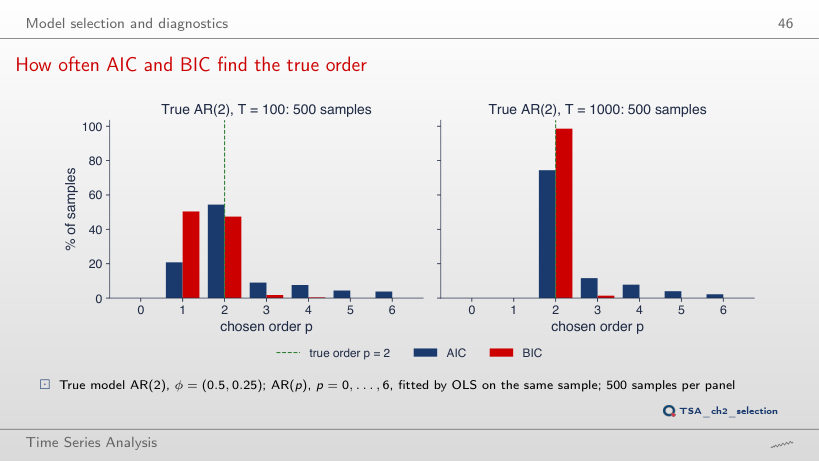
Answer
BIC, in 98.6% of the samples, against 74.4% for AIC, which picks an order that is too large in 25.6% of the cases. With T = 100 the ranking reverses: AIC 54.4%, BIC 47.4%, and BIC picks a model that is too small in 50.4% of the cases, because φ₂ = 0.25 is hard to detect in 100 observations.
Residual diagnostics
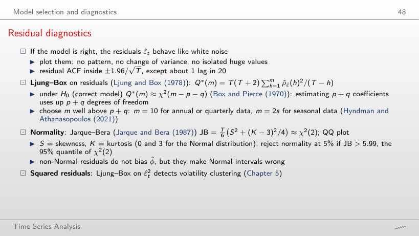
Worked example
Answer
Yes: with 8 − 1 = 7 degrees of freedom p = 0.023; even with the (wrong) 8 degrees of freedom p = 0.039. For the MA(3), Q*(8) = 5.35 with 5 degrees of freedom gives p = 0.375, so we do not reject. Normality is rejected for both: Jarque–Bera 25.9 for the AR(1) and 39.0 for the MA(3), above 5.99.
Why m - p - q degrees of freedom
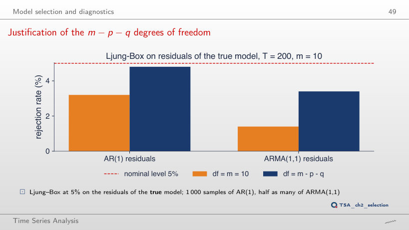
Answer
In 1.4% of the samples, not in 5%: the estimated residuals are less correlated than true white noise at the first lags. With m − p − q = 8 degrees of freedom the rate is 3.4%; for the AR(1), 3.2% with 10 and 4.8% with 9. At m = 3 the gap widens: for the ARMA(1,1), 0.2% with 3 degrees of freedom and 4.8% with 1.
Forecasting with ARMA models
Worked example: forecasting an AR(1)
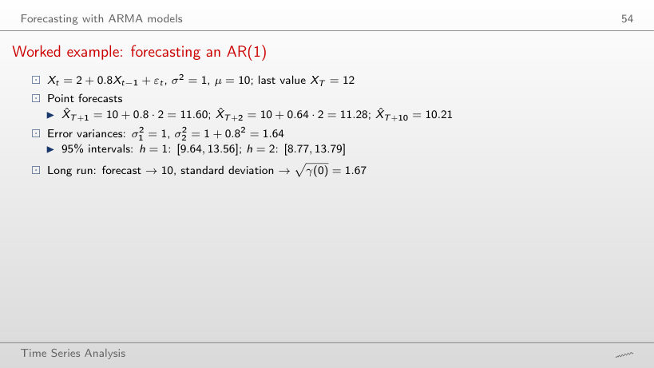
Worked example
Answer
Towards 2 × 1.96 × √γ(0) = 2 × 1.96 × 1.67 = 6.53. The width is 3.92 at h = 1, 5.02 at h = 2 and 6.50 at h = 10: uncertainty grows fast over the first horizons, then settles at the unconditional level.
Mean reversion in forecasts
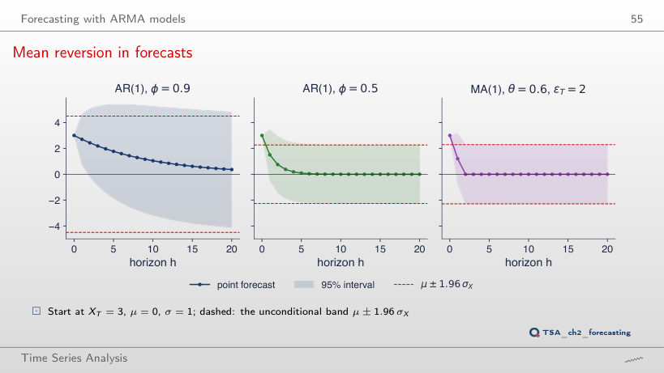
Answer
1.77 for φ = 0.9 (standard error 1.85) and 0.094 for φ = 0.5, practically the mean. The interval approaches the unconditional band μ ± 1.96σX, with σX = 2.29 for φ = 0.9 and 1.15 for φ = 0.5. For the MA(1) only the first step is informative, θεT = 1.2; from h = 2 on, the forecast is the mean and the interval has its long-run width. The ▶ button moves XT from 3 to −4 and back: the AR(1) forecasts return to the mean from any starting point, and the intervals do not change, because the standard errors do not depend on XT.
Case study: Romanian GDP growth
Step 1: identification
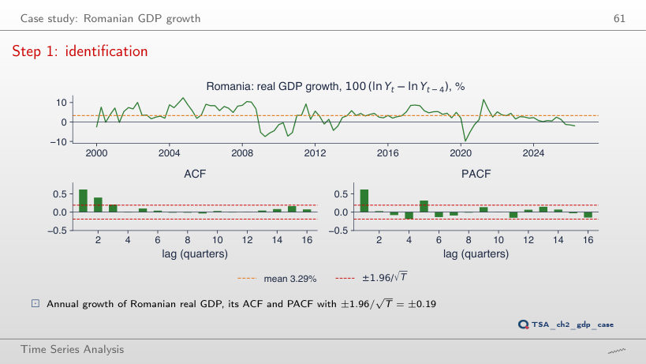
Answer
Yes. With 80 quarters, the first autocorrelations are 0.62, 0.45 and 0.24, then 0.04 at lag 4, inside the ±0.22 band. On the full sample of 106 quarters: 0.62, 0.40, 0.21 and −0.01. The pattern comes from the construction of the series: the annual rate is the sum of four quarterly rates, and consecutive annual rates share three quarters. Ljung–Box Q*(8) = 64.9 on the full sample.
Step 2: estimation and information criteria
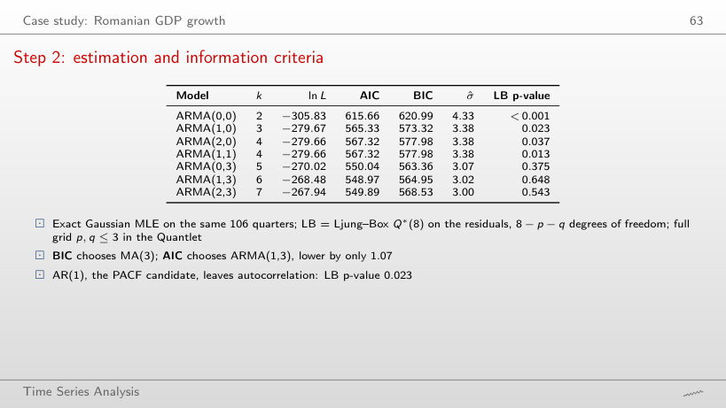
Answer
ARMA(1,3), with AICc 549.82 against 550.64 for the MA(3), a difference of 0.82. On AIC, ARMA(2,3) is second, 0.92 above the minimum, ahead of the MA(3) (1.07), and ARMA(3,3) is 2.37 above. On BIC, the MA(3) has 563.36 and ARMA(1,3) follows 1.59 higher.
Interpreting the estimated MA(3)
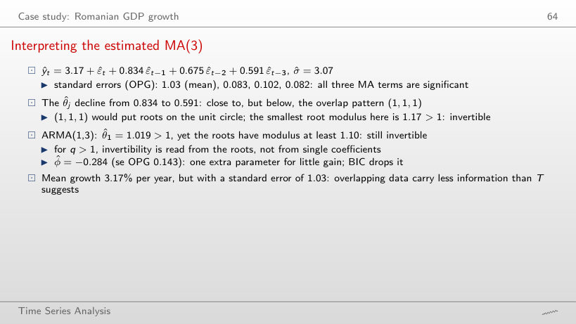
Worked example
Answer
Yes: the roots of θ(z) have moduli 1.102, 1.181 and 1.181, all above 1. For q > 1 invertibility is read from the roots, not from the coefficients one at a time. The AR coefficient, φ̂ = −0.284 with se 0.143, has a t-ratio of −1.98, just beyond the 1.96 threshold.
Step 3: diagnostics of the MA(3)
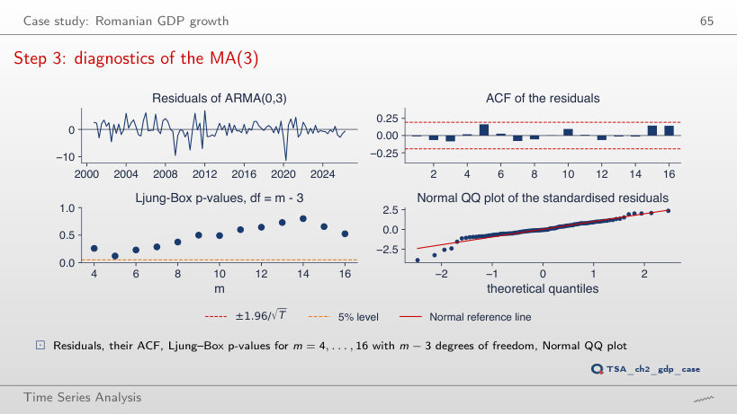
Answer
0.720, a conclusion that is too reassuring: the degrees of freedom must be reduced by the number of estimated ARMA parameters. The residuals are not Normal: Jarque–Bera 39.0, p < 0.001, skewness −0.75, kurtosis 5.61; the largest residual, −11.4 in 2020Q2, is −3.89 standard deviations. The AR(1) leaves correlation in the residuals: Q*(8) = 16.2 with 7 degrees of freedom, p = 0.023.
Step 4: forecasts
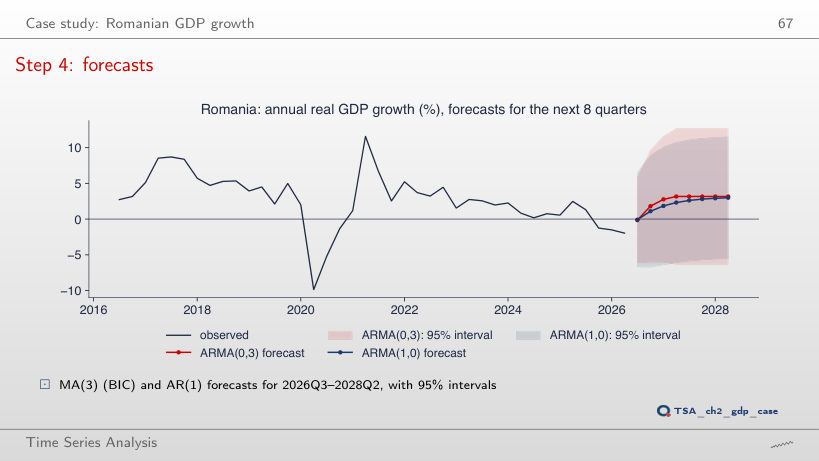
Answer
From the fourth quarter: −0.14, 1.81, 2.77, then the mean of 3.17%. After q = 3 steps the model only knows the mean. The AR(1) returns gradually: 2.99% after 8 quarters, with a mean of 3.12%. The 95% intervals are [−6.1, 5.9] for one quarter and [−6.3, 12.7] from four quarters on. With the origin in 2019Q4, both models forecast more than 3.8% for 2020, while the series falls to −9.9% in 2020Q2.
Interpreting the GDP forecasts
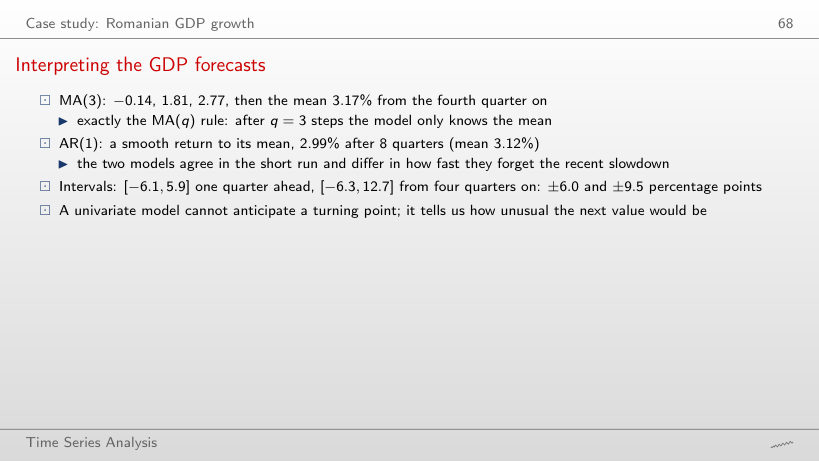
Worked example
Answer
For the MA(3), ψj = 0 for j > 3, so σh stays at σ̂√(1 + θ̂₁² + θ̂₂² + θ̂₃²) = 3.07 × √2.50 = 4.85 from h = 4 on. For the AR(1), σh grows from 3.38 to 4.35 at h = 8. The width of the 95% interval goes from 12.0 to 19.0 for the MA(3) and from 13.2 to 17.0 for the AR(1). With the origin in 2019Q4, the RMSE over the 8 observed quarters is 7.41 for the MA(3) and 7.06 for the AR(1).
More real series
Romanian inflation: an AR(2) forecast
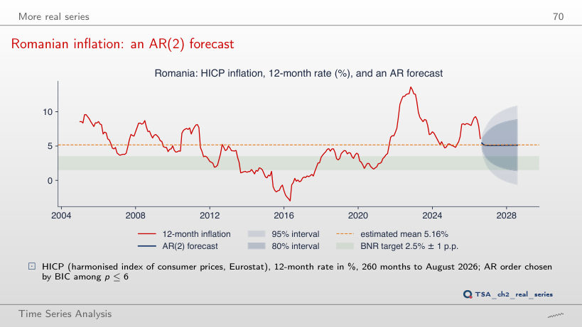
Answer
Towards the estimated mean, 5.16%, the average of 2005–2026, not towards the 2.5% target: from 6.09% in August 2026 to 5.44% in September and 5.13% in August 2028. φ̂₁ + φ̂₂ = 0.976 and the largest inverse root has modulus 0.963, so the return is slow. The Ljung–Box test on the residuals rejects: Q*(12) = 71.6 with 10 degrees of freedom, p < 0.001.
Daily returns: BET and EUR/RON
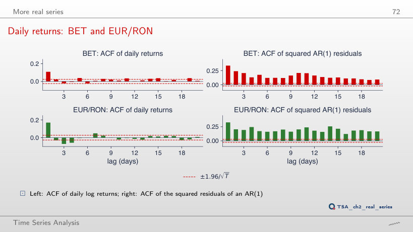
Answer
No: R² is 1.2% for the BET and 2.9% for EUR/RON. The effect is real statistically but small economically. The squared residuals are strongly autocorrelated (Ljung–Box Q*(10) = 2496 for the BET and 2351 for EUR/RON), and the kurtosis of the residuals is 14.0 and 17.0: the model describes the mean, not the variance.
Interpreting the AR(1) for daily returns
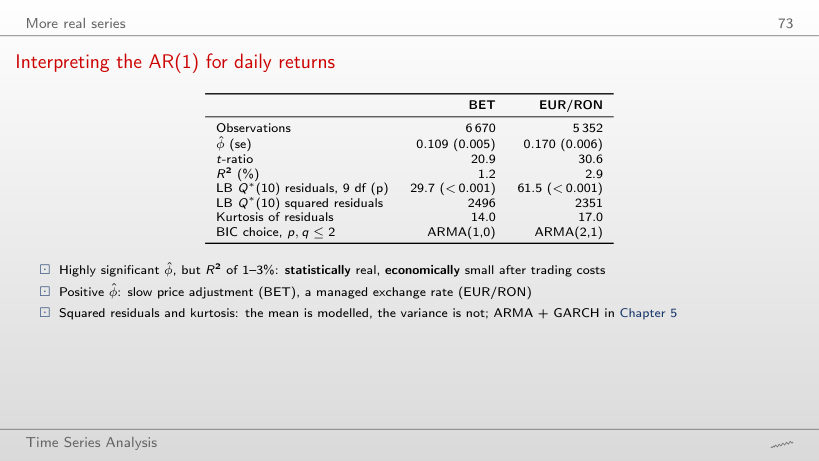
Worked example
Answer
No. The standard error of the slide, 0.0052, is the OPG one, the statsmodels default; the classical standard error, from the curvature of the log-likelihood, is 0.0122, close to √((1 − φ̂²)/T) = 0.0122, and the t-ratio is 9.0. For EUR/RON, 12.6 instead of 30.6. The coefficients remain highly significant, but R² is 1.2% and 2.9%.
The sunspots: AR(2) and the information criteria
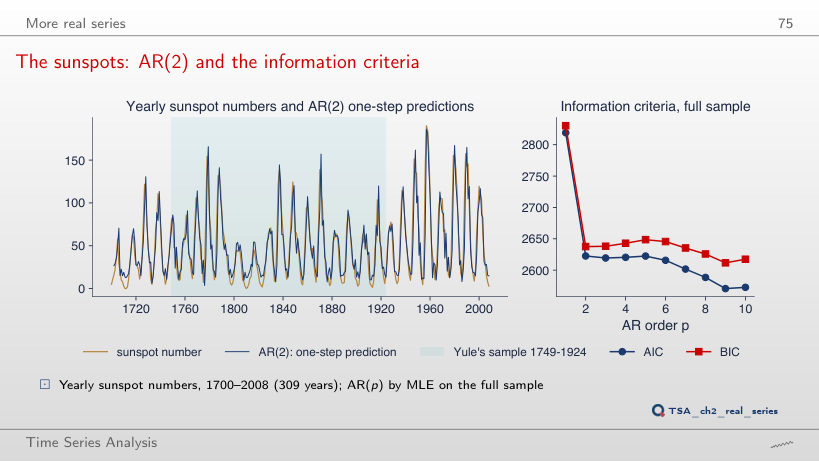
Answer
10.6 years. The estimated coefficients, φ̂₁ = 1.336 and φ̂₂ = −0.650, give complex roots; the period is 2π/arccos(φ̂₁/(2√−φ̂₂)) = 10.6, and the modulus of the inverse root is 0.806. On the full sample, the AR(2) explains 83% of the variance one year ahead, and AIC and BIC both pick p = 9 among p ≤ 10.
Simulations: shocks from the Normal distribution, drawn with the seeds of the chapter code; when the parameters differ from those of the lecture, the simulation is redone in the browser. GDP: Eurostat, chain-linked volumes (2010), not seasonally adjusted, in the version used in the lecture. HICP: Eurostat, up to August 2026. BET: EODHD; EUR/RON: BNR reference rate. Sunspots: the statsmodels data set, 1700–2008.